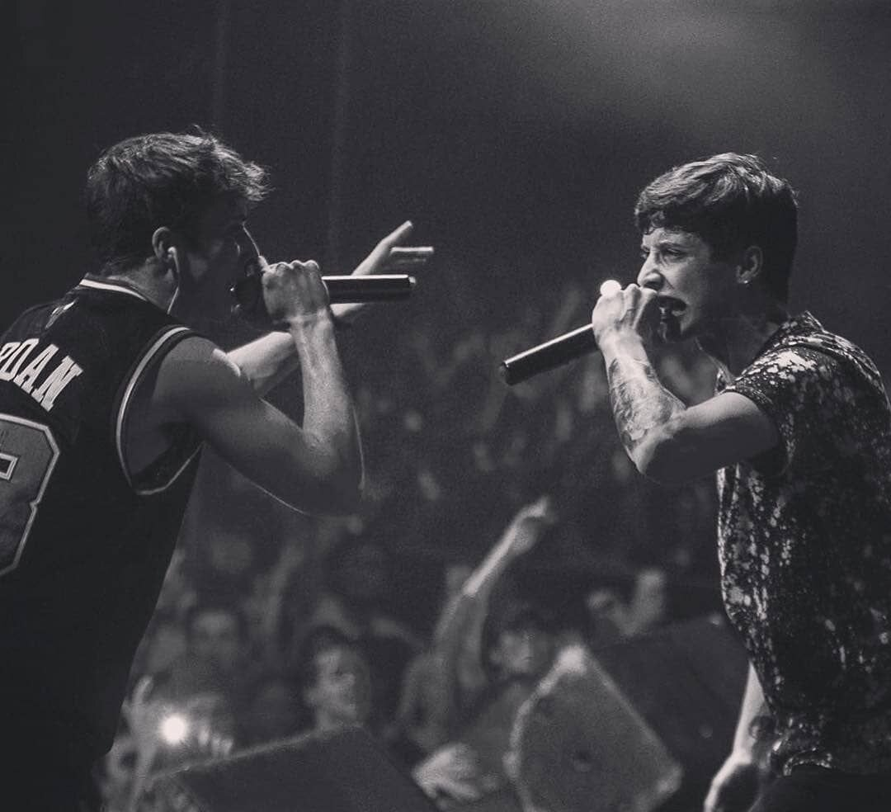

El hip hop español es un movimiento cultural que abarca varios estilos de música del hip hop, como el rap y el trap así como diferentes manifestaciones artísticas como grafiti o breakdance surgidas en España.
Indice
Está generalmente aceptado que el hip hop, cuyo origen tiene lugar en Estados Unidos en la década de los setenta, ingresa al mercado de habla hispana en Puerto Rico a inicio de la década de los 80 y luego hace su aparición en España en la primera mitad los años 80.
Uno de los factores que más contribuyeron a la aparición e implantación de la cultura hip hop en el país fue la presencia de bases militares estadounidenses en suelo español. Los militares acantonados en ellas, especialmente los de ascendencia afrodescendiente, seguían la estética hip hop y escuchaban rap tanto en la base, a través de la emisora de la misma o los discos que compartían y vendían en ella, como en las discotecas a las que acudían, como Stone's en Torrejón de Ardoz.
Entre los primeros que comenzaron a producir rap en España se cita a Masters TDK, DNI, Sindicato del Crimen, K1000,Mc Randy o DJ Jonco. El primer disco de rap en España fue publicado en 1989. Se trata del recopilatorio "Madrid Hip Hop", que contenía temas de alguno de los grupos anteriores y de otros como QSC o Estado Crítico. Ese mismo año, el sello Ariola publicaría "Rapin' Madrid", con temas de grupos como Sweet, Vial Rap, Código Mortal, SSB, Poder Oscuro, Sony y Mony, MC Randy y DJ Jonco y Jungle Kings. Ambos recopilatorios tuvieron poco éxito comercial pero contribuyeron a establecer una escena viable en Madrid, dando a conocer el rap al público español, y permitieron a varios de estos artistas publicar discos en solitario.
Yo soy de esa clase de torpes que les duelen más las palabras que los golpes.(Sharif)
Del caldo de cultivo surgido durante los primeros años noventa, tanto en términos de seguimiento por un público minoritario pero de número creciente como por parte de una cantera de músicos forjada en el circuito independiente de maquetas, surge un conjunto de artistas que contribuirá a la consolidación definitiva del género en España. La segunda mitad de la década acogerá la publicación de varios trabajos que sientan las bases del estilo en España y que dan lugar a la aparición de una escena profesional consolidada. El grupo madrileño Club de los Poetas Violentos (CPV), conocido también como "los padres del rap en español" y uno de los grupos más importantes en la historia del género en el país, publica en 1994 el primer álbum de rap en España, Madrid Zona Bruta. Con unas ventas de 2.000 copias, el disco se convierte en un fenómeno popular y encabeza un nuevo acercamiento al hip hop en España más profesionalizado. Se publican a continuación nuevos discos de CPV y de otros grupos como los mallorquines La Puta Opepé o los madrileños VKR. En 1997, el grupo catalán 7 Notas 7 Colores lograría un considerable éxito con su trabajo Hecho es Simple, con más de 20.000 copias vendidas y la aparición de algunas de sus canciones en diferentes recopilatorios y bandas sonoras.

En los primeros años del siglo XXI aparecen tres discos que no solo evidenciarán la buena salud del rap en España sino que además serán considerados como la definitiva mayoría de edad del hip hop español.En el año 2000, la MC gaditana Mala Rodríguez publica el largo Lujo ibérico, disco que rompería las listas de éxitos logrando el disco de oro y convirtiéndose en el álbum que más discos ha vendido en la historia del hip hop español. Producido por los antiguos miembros de CPV Jota Mayúscula y Supernafamacho, la andaluza da forma a un disco que fusiona las estructuras del rap con elementos de la música flamenca y que ha sido calificado como "uno de los momentos más importantes de la música nacional de los últimos 30 años". Además de sus propias cualidades, la popularidad del disco se vio potenciada gracias a su inclusión en la banda sonora de la película Lucía y el sexo de Julio Medem.
Las tendencias del rap español distan de ser homogéneas a partir de la segunda mitad de los años 2000. Desde este momento, en la escena aparecen y se desarrollan propuestas muy diferentes, emulando en buena medida los diferentes estilos del rap estadounidense. Así, se publican trabajos de rap consciente con fuerte contenido social como Sharif o The Louk. surgen acercamientos experimentales, comienza una corriente de rap gangsta y se producen varios discos de inspiración jazz rap. Uno de los grupos que más éxito alcanza en esta época, trascendiendo el hip hop para llegar a un tipo de público amplio y generalista, es el madrileño La Excepción. Con un estilo alegre, lleno de sentido del humor y multitud de préstamos y referencias de la cultura gitana, el grupo logró vender 33.000 copias de su primer álbum, "Cata Cheli" (2003). La popularidad del grupo no dejó de crecer durante toda la década gracias a su estilo desenfadado y de barrio, alcanzando su punto álgido con la obtención en 2009 de dos premios Goya por la película El truco del manco en las categorías de "mejor canción original" y de "mejor actor revelación" para el líder del grupo, El Langui.
Resurgen distintas corrientes, algunas de ellas se podrían definir como hip hop neopolítico, recuperando en cierto modo la esencia crítica del rap de los 90 u old school, con artistas como Hard GZ, Ayax y Prok, Swit Eme, Al Safir, Foyone cuyas letras hablan de la desigualdad en la sociedad y están marcadas por un ritmo y una base más tradicionales. Este rap que estamos viendo, también habla sobre cómo es la vida en la calle, cómo afectan las decisiones de los más adinerados a la gente que lucha en malas condiciones para lograr sus objetivos. Otros artistas destacados de la nueva generación son Agorazein, Mala Praxis, Albany, Arkano, Bejo, Dellafuente, La Favi, Nadal015 , Natos y Waor, Rels B, Nikone, Memataron o Delaossa entre otros. Otro artista a destacar es Hoke, un rapero valenciano de la cosecha del 96 con un futuro muy prometedor en el mundo de la música urbana.
Eres tan pobre que solo tienes dinero (Tote King)
| Nombre | Apodo artístico | Canción más famosa |
|---|---|---|
| Daniel Martínez | Delaossa | Veneno |
| Pablo Enoc | Dellafuente | Flores pa tu pelo |
| Fernando Costa | FERNANDOCOSTA | Malamanera |
| Melina Altés | Anier | Carnaza |
| Gonzalo y Fernando | Natos y Waor | Cicatrices |